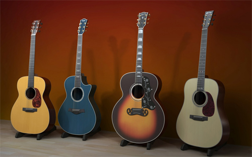

Modelos
Guitar center te presenta una variedad muy amplia de modelos de guitarras a continuacion.
Acusticas
La guitarra acústica es un instrumento musical harmónico de cuerda bien templada que cuenta con una caja de resonancia para la amplificación del sonido producido por la vibración de las cuerdas, un mástil, un diapasón o trastero, un clavijero y un puente donde se colocan las cuerdas.
Hay una gran variedad de este tipo de guitarras como la country que se muestra en la imagen de la derecha, la guitarra española o clásica que es la más común, la guitarra con resonador cuyo sonido es producido por uno o más conos metálicos, entre otras.
Electricas
Una guitarra electrica es un instrumento musical armónico y melódico de seis cuerdas que utiliza el principio de inducción electromagnética para convertir las vibraciones de sus cuerdas de metal en señales eléctricas. El sonido de la guitarra se verá influido por el diseño de las pastillas, la ubicación de las mismas, la escala y en menor medida por el puente y la cejilla, el uso de los círculos de la escala modificará el sonido de cada una de sus cuerdas.
Electro Acusticas
Una guitarra electro-acústica es un instrumento musical armónico equipado con pastillas , un micrófono o transductores. En las guitarras electro-acústicas, los transductores y micrófonos se utilizan siempre porque las pastillas convencionales no son capaces de captar las vibraciones de los materiales no magnéticos. El diseño es distinto de una guitarra semi-acústica, que es una guitarra eléctrica , pero con la adición de cámaras de sonido dentro del cuerpo de la guitarra. Por lo general, las guitarras electro-acústicas están equipadas con pastillas eléctricas, y por lo tanto requieren un preamplificador incorporado en el cuerpo de la guitarra para amplificar la señal antes de que viaje al amplificador principal de la guitarra